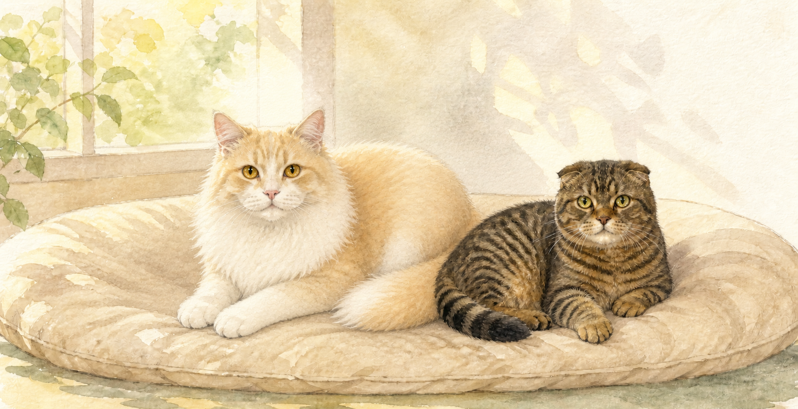
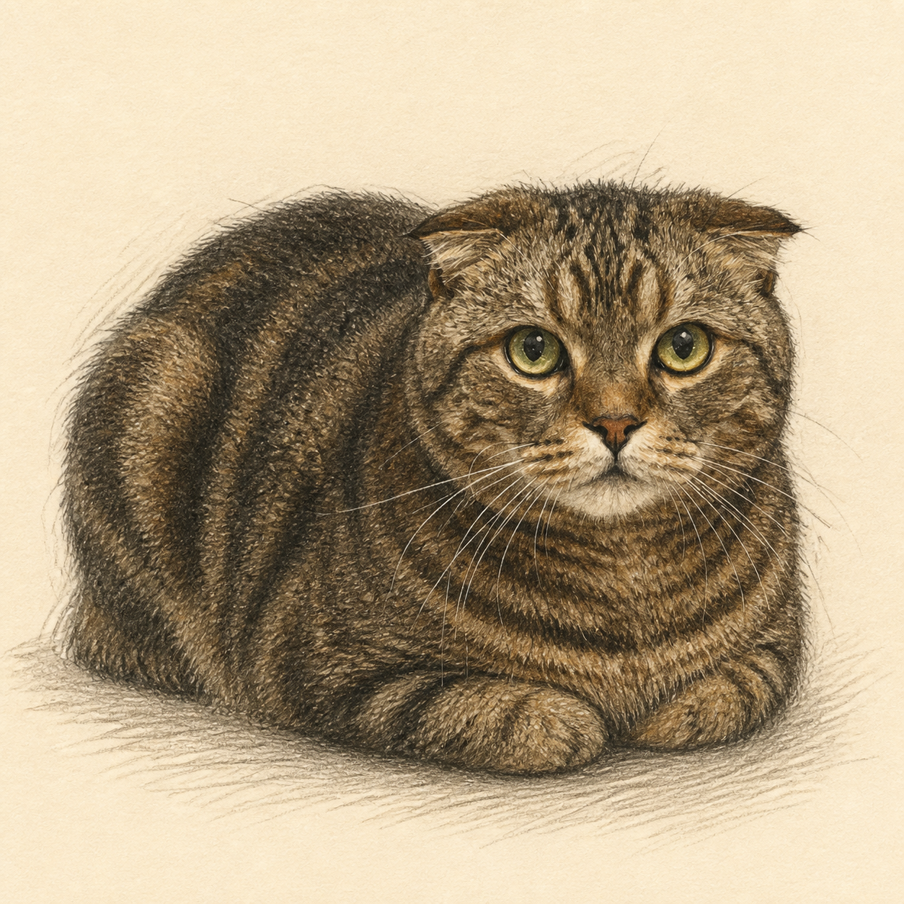
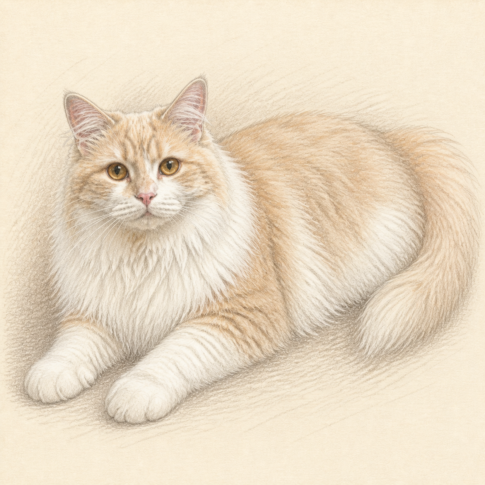
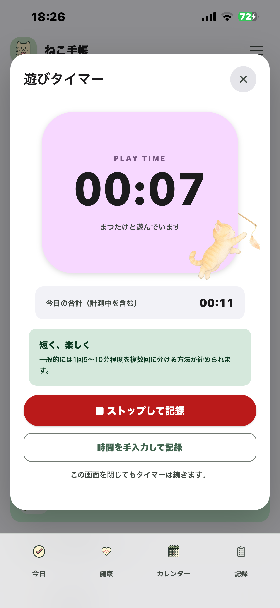
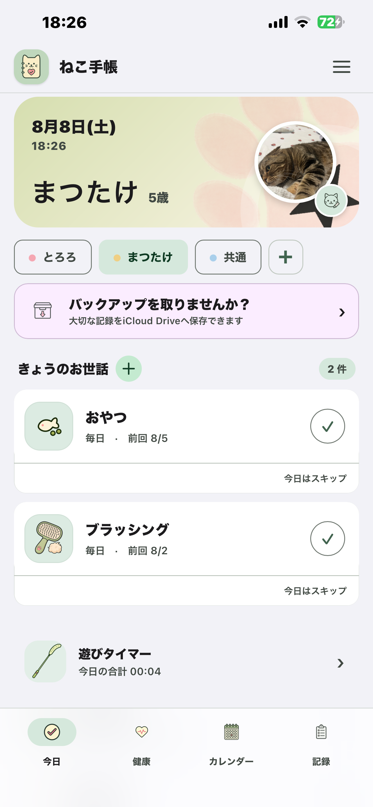
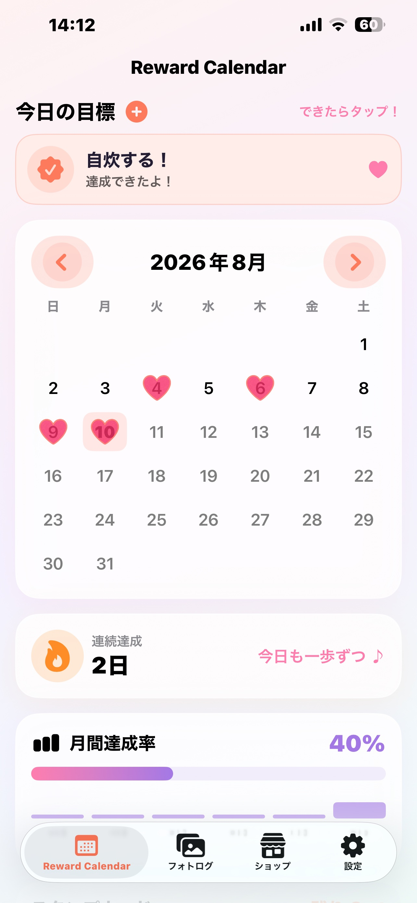
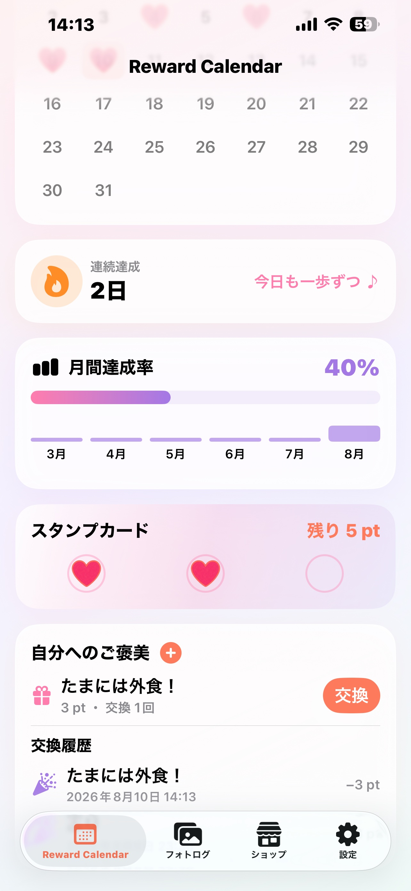
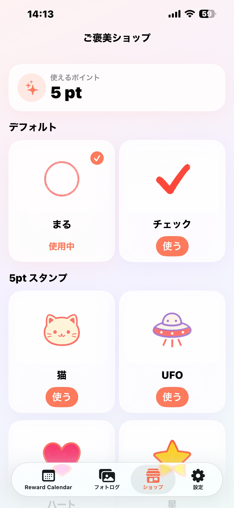
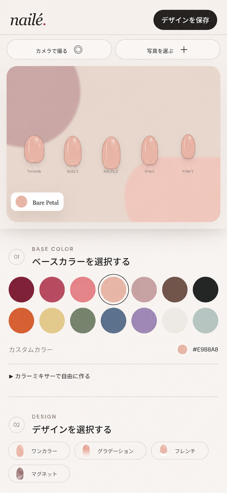
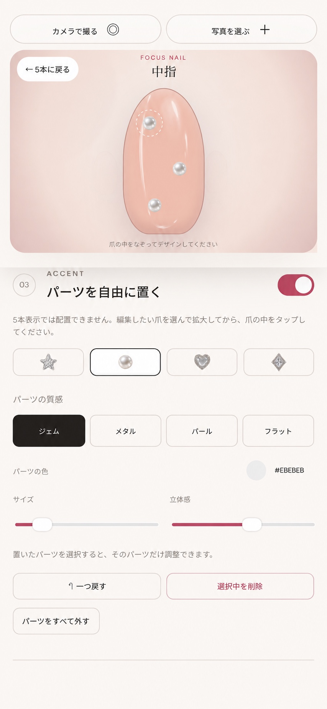

01
SAP Basis・システム運用
基幹業務システム領域のITエンジニアとして約5年勤務。SAP Basisの運用にも携わり、企業の業務を支えるシステムを扱ってきました。
IT ENGINEERING
PROFILE
基幹業務システムのITエンジニアとして約5年、開発や運用に携わりました。その後は人事・採用へ移り、スタートアップから大手コンサルティングファームまで、幅広い企業の採用を支援してきました。
現在はProgateでタレントコンシェルジュとして、学習者の方々をサポートしています。個人でも、日々の生活で「こういうものが欲しい」と思ったことをきっかけに、iPhoneアプリやWebアプリをつくっています。
EXPERIENCE
01
基幹業務システム領域のITエンジニアとして約5年勤務。SAP Basisの運用にも携わり、企業の業務を支えるシステムを扱ってきました。
IT ENGINEERING02
人事・採用担当として、新卒採用を経験。採用する企業と、仕事を探す人の両方に向き合ってきました。
RECRUITING03
スタートアップから大手コンサルティングファームまで、さまざまな企業の中途採用を支援してきました。
RECRUITING04
現在はProgateのタレントコンシェルジュとして、学習を続ける方々をサポートしています。
LEARNER SUPPORTCATS

毎朝4時ごろに起こしにくる、優しい性格。

作業中にキーボードの上に座りに来るくらい甘えん坊。
WORKS


毎日のお世話、健康、通院、遊び、予定を猫ごとにまとめて残せる、ローカルファーストの記録アプリです。二匹と暮らす中で、記録したい内容が複数の場所に分かれてしまう不便をなくすためにつくりました。



毎日の小さな目標をスタンプで記録し、達成をポイントと自分へのご褒美につなげる習慣化アプリです。記録を義務にせず、操作した瞬間に楽しい反応が返ることを意識してつくりました。


色やパーツを選び、ネイルデザインを画面上で組み立てて確認できるアプリです。Web版の試作を経て、iPhoneアプリとして公開しました。